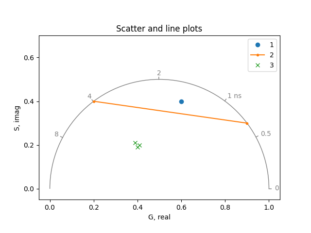

Phasor plot#
An introduction to plotting phasor coordinates.
The phasorpy.plot.PhasorPlot class is used to plot phasor
coordinates as scattered points, lines, 2D histograms, and contours.
The plots are supplemented with universal semicircles, polar grids,
polar cursors, component mixture indicators, and manual annotations.
Import required modules, functions, and classes:
import math
import numpy
from phasorpy.plot import PhasorPlot
Empty phasor plot#
Create an empty phasor plot, showing the first quadrant and the universal semicircle:
plot = PhasorPlot()
plot.show()
Universal semicircle#
Create a phasor plot at a frequency of 80 MHz and custom axis limits. Add a second, transformed universal semicircle:
plot = PhasorPlot(frequency=80.0, xlim=(-0.2, 1.05))
plot.semicircle(polar_reference=(0.9852, 0.5526))
plot.show()
Scatter and line plots#
Plot phasor coordinates as scatter and/or lines:
Cursors#
Point out certain polar coordinates, and ranges thereof, using phasor coordinates:
plot = PhasorPlot(frequency=80.0, title='Cursors')
plot.cursor(0.4, 0.3)
plot.cursor(0.5, 0.3, 0.8, 0.15)
plot.cursor(0.9, 0.3, radius=0.05)
plot.show()
Alternatively, use polar coordinates:
plot = PhasorPlot(frequency=80.0, title='Polar cursors')
plot.polar_cursor(0.6435, 0.5, linestyle='-')
plot.polar_cursor(0.5236, 0.6, 0.1963, 0.8, linewidth=2)
plot.polar_cursor(0.3233, 0.9482, radius=0.05, color='tab:red')
plot.show()
Component mixtures#
Show linear combinations of phasor coordinates or ranges thereof:
real, imag, weights = numpy.array(
[[0.1, 0.2, 0.5, 0.9], [0.3, 0.4, 0.5, 0.3], [2, 1, 2, 1]]
)
plot = PhasorPlot(frequency=80.0, title='Component mixtures')
plot.components(real, imag, linestyle='', fill=True, facecolor='lightyellow')
plot.components(real, imag, weights)
plot.show()
2D Histogram#
Plot large number of phasor coordinates as a 2D histogram:
real, imag = numpy.random.multivariate_normal(
(0.6, 0.4), [[3e-3, -1e-3], [-1e-3, 1e-3]], (256, 256)
).T
plot = PhasorPlot(frequency=80.0, title='2D Histogram')
plot.hist2d(real, imag)
plot.show()
Contours#
Plot the contours of the density of phasor coordinates:
plot = PhasorPlot(frequency=80.0, title='Contours')
plot.contour(real, imag)
plot.show()
Image#
Plot the image of a custom-colored 2D histogram:
plot = PhasorPlot(frequency=80.0, title='Image (not implemented yet)')
# plot.imshow(image)
plot.show()
Combined plots#
Multiple plots can be combined:
real2, imag2 = numpy.random.multivariate_normal(
(0.9, 0.2), [[2e-4, -1e-4], [-1e-4, 2e-4]], 4096
).T
plot = PhasorPlot(
title='Combined plots', xlim=(0.35, 1.03), ylim=(0.1, 0.59), grid=False
)
plot.hist2d(real, imag, bins=64, cmap='Blues')
plot.contour(real, imag, bins=48, levels=3, cmap='summer_r', norm='log')
plot.hist2d(real2, imag2, bins=64, cmap='Oranges')
plot.plot(0.6, 0.4, '.', color='tab:blue')
plot.plot(0.9, 0.2, '.', color='tab:orange')
plot.cursor(0.9, 0.2, color='tab:orange')
plot.polar_cursor(math.atan2(0.4, 0.6), math.hypot(0.6, 0.4), color='tab:blue')
plot.semicircle(frequency=80.0, color='tab:purple')
plot.show()
All quadrants#
Create an empty phasor plot showing all four quadrants:
plot = PhasorPlot(allquadrants=True, title='All quadrants')
plot.show()
Matplotlib axes#
The PhasorPlot class can use an existing matlotlib axes. The PhasorPlot.ax attribute provides access to the underlying matplotlib axes, for example, to add annotations:
from matplotlib import pyplot
ax = pyplot.subplot(1, 1, 1)
plot = PhasorPlot(ax=ax, allquadrants=True, title='Matplotlib axes')
plot.hist2d(real, imag, cmap='Blues')
plot.ax.annotate(
'0.6, 0.4',
xy=(0.6, 0.4),
xytext=(0.2, 0.2),
arrowprops=dict(arrowstyle='->'),
)
pyplot.show()
plot_phasor function#
The phasorpy.plot.plot_phasor() function provides a simpler
alternative to plot phasor coordinates in a single statement:
from phasorpy.plot import plot_phasor
plot_phasor(real[0, :32], imag[0, :32], fmt='.', frequency=80.0)
sphinx_gallery_thumbnail_number = 10
Total running time of the script: (0 minutes 0.668 seconds)